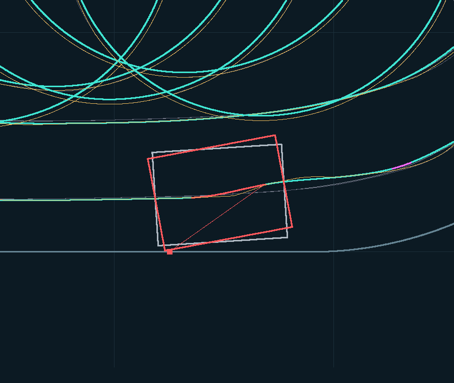
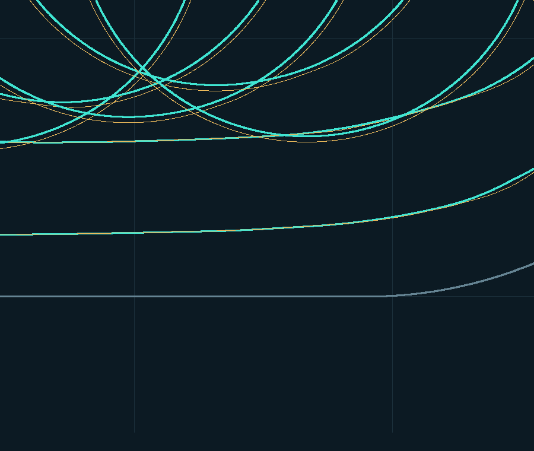
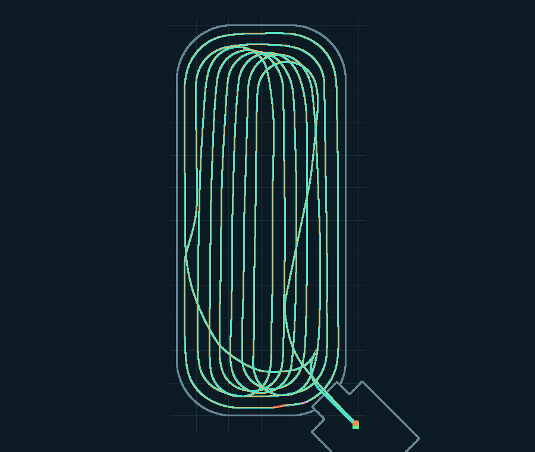
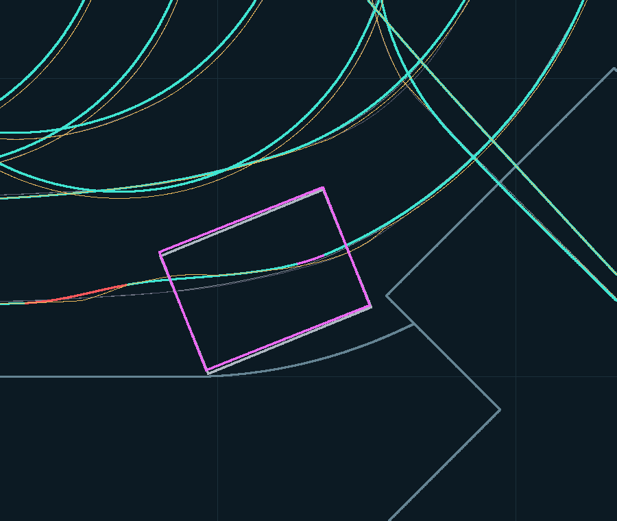
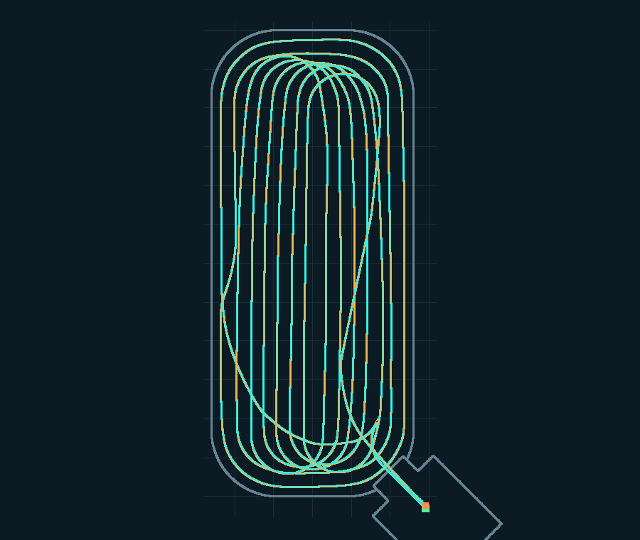
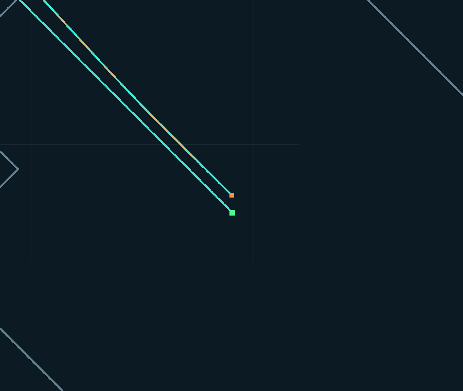
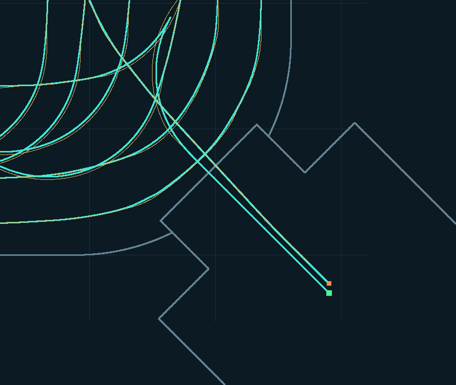
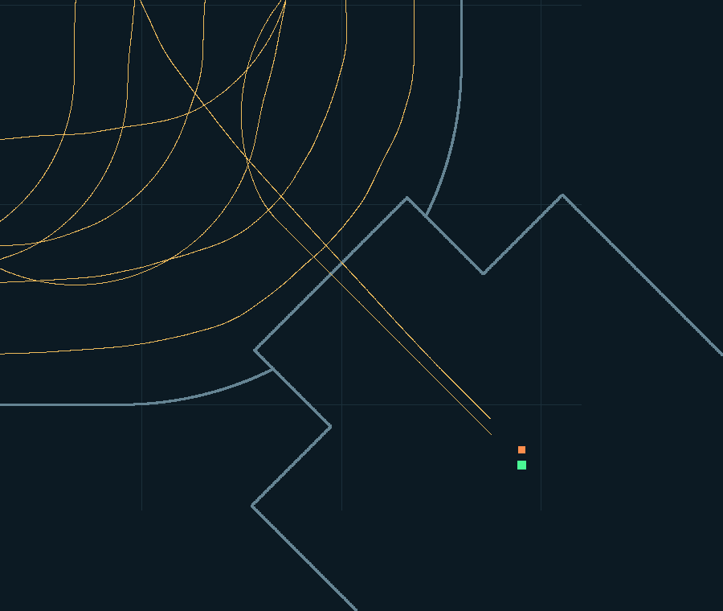
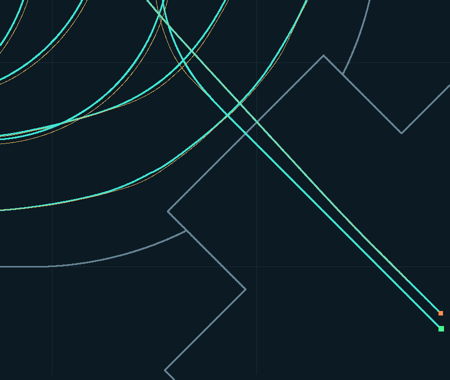
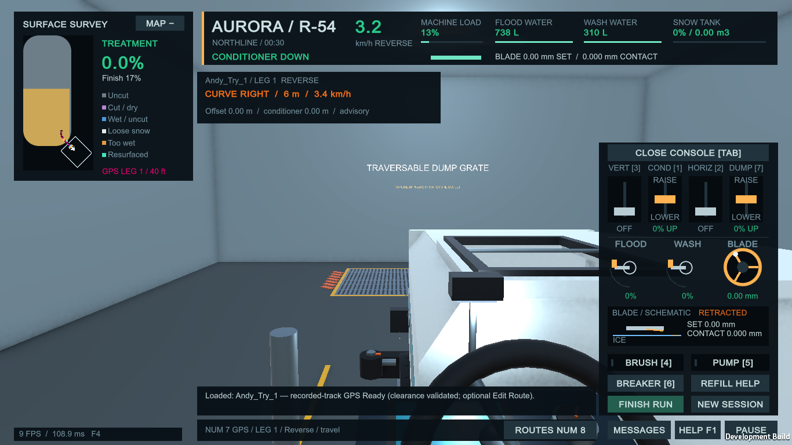

Actual Unity authoring viewport exports. Gray: raw; cyan: guide; gold: conditioner; magenta: derived curvature; red: boundary failure and selected body/contact. Green/orange dots: vehicle start/end.
Drag the slider: repaired path on the left, saved derived draft on the right. The raw recording is unchanged.









Recorded-pose render fixture. The runtime display remains limited to the upcoming section.
